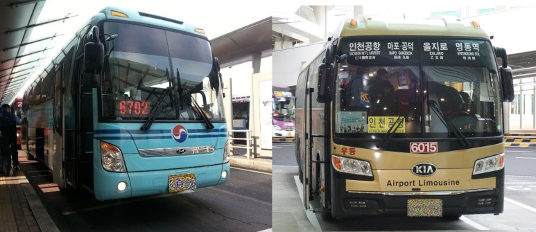
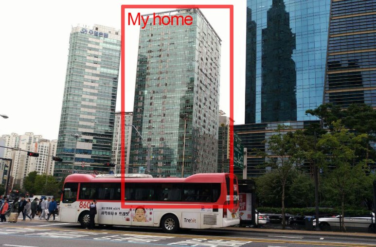
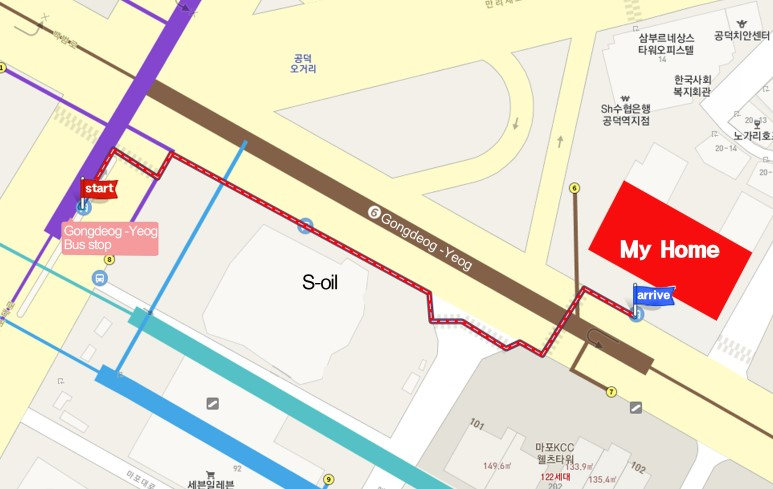

To board the Airport Bus, you will need to head outside the Arrivals Terminal on the ground level(1F) where there are buses heading to Seoul and other regions.
To get to our house via the Airport Bus, you will need to board the bus numbers 6015 or 6702, and get off at “Gongdeok” station.
This is a photo of our house, taken from the “Gongdeok” station bus stop. The second building from the left (in the photo) is our house.
Below is a map showing the walking directions from the “Gongdeok” station bus stop.
The bus stop is in the middle of the road, so you will need to cross the road to the right (from when you step off the bus) via the footpath.
Then, follow the map and the red line to the “Metro the Ovile” building, where our house is.